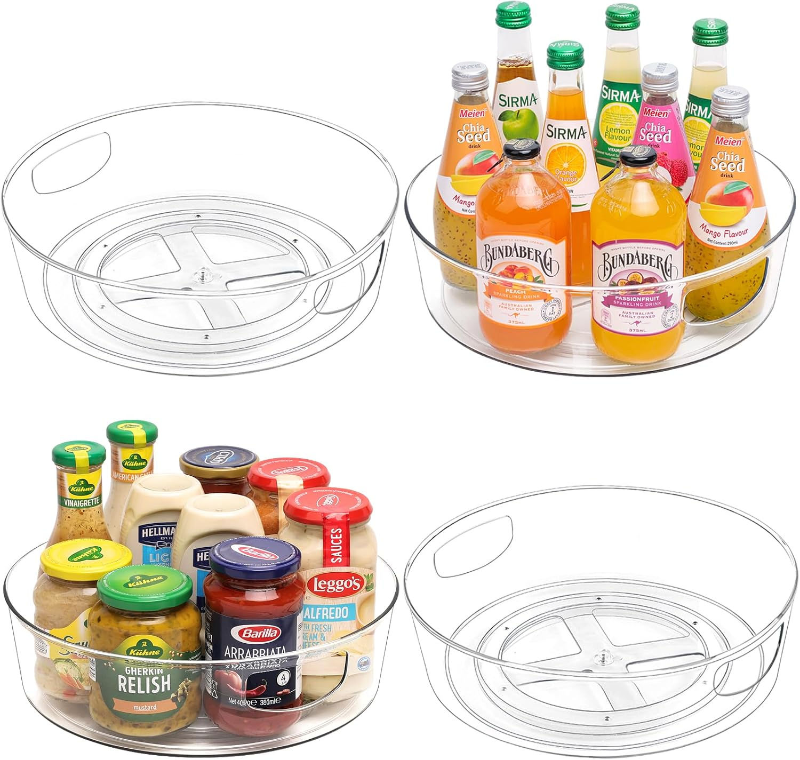
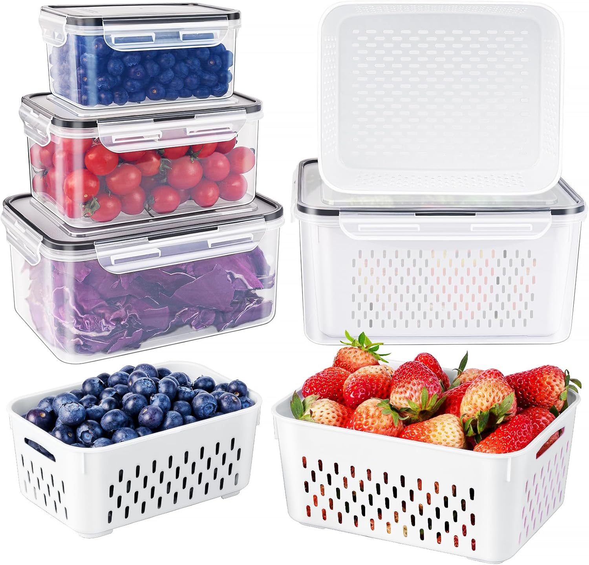
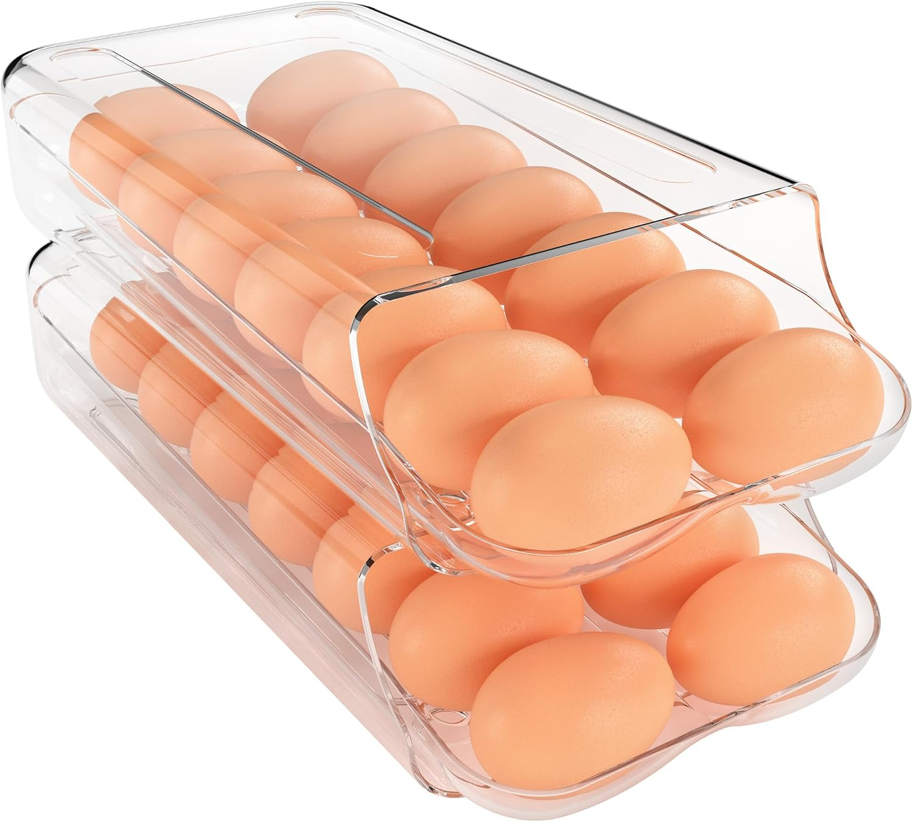
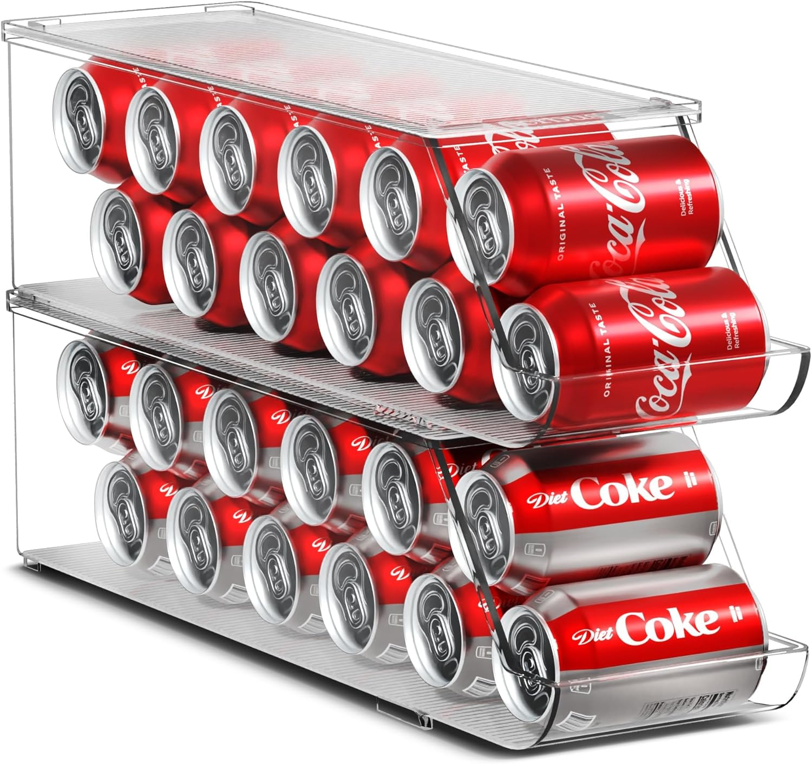
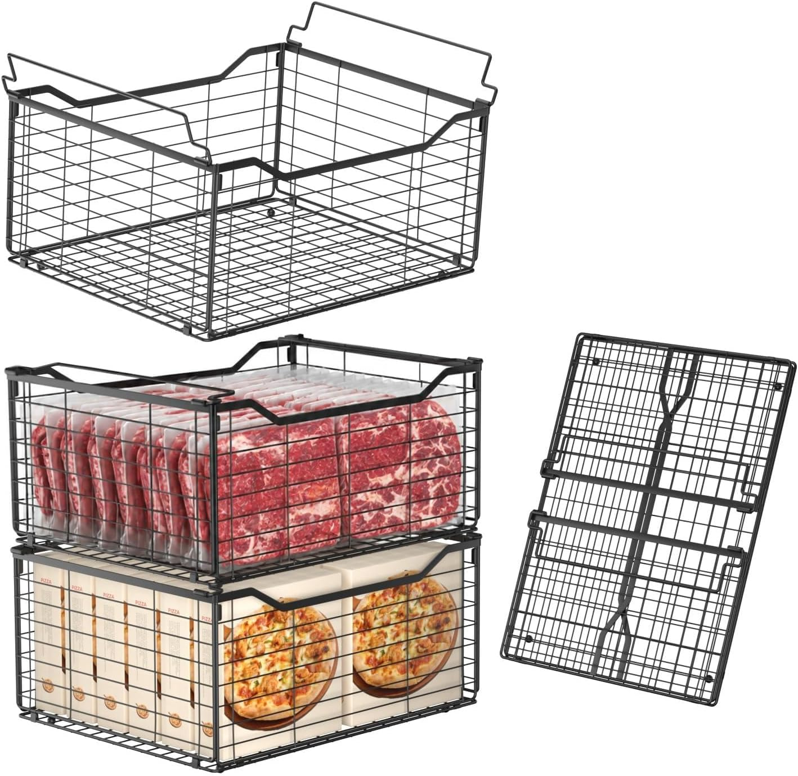
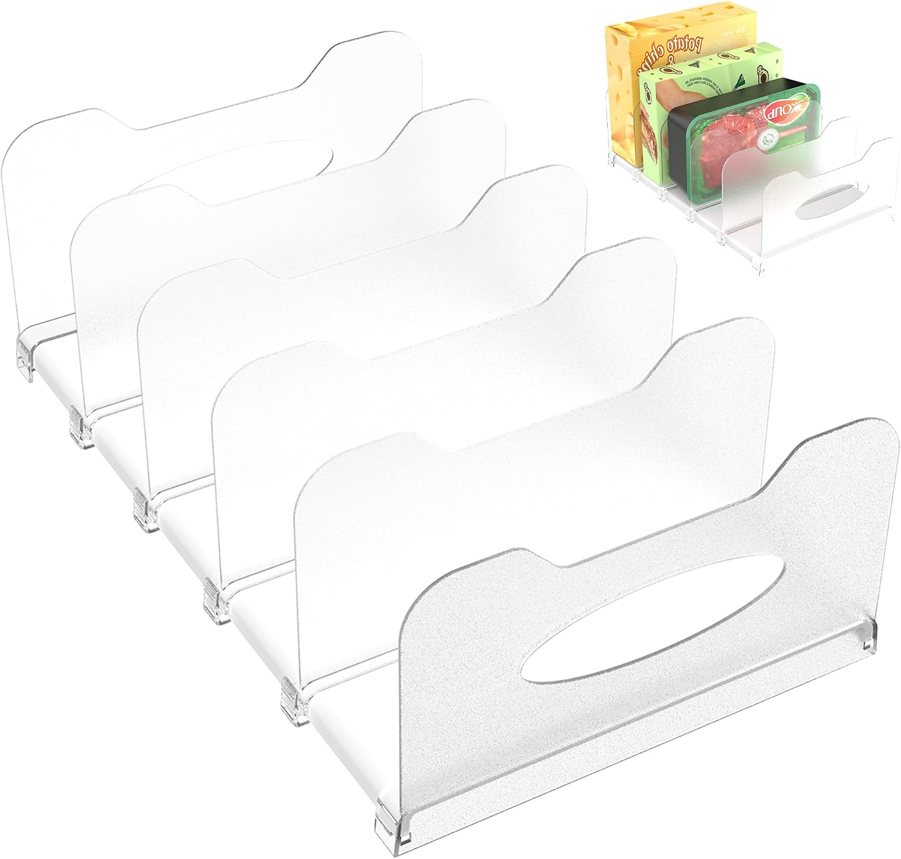
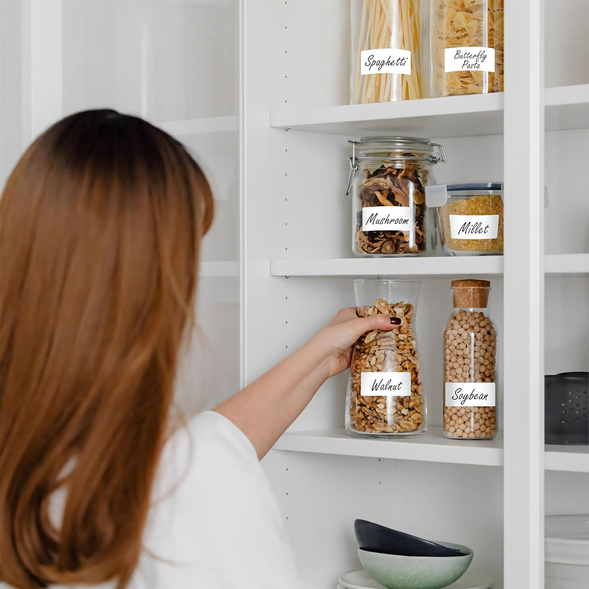

Opening the fridge shouldn't feel like an archaeological dig. We've all been there—pushing aside a mystery jar of salsa to find the butter, only to discover a bag of spinach that has turned to liquid in the crisper drawer. The "Clear Fridge Reset" isn't just about aesthetics; it's about visibility. When you can see your food, you eat it before it spoils, saving money and reducing waste. Here are the 8 essentials that transform a chaotic icebox into a calm, organized, and highly functional space.
Table of Contents
1. The Foundation: Structure & Visibility
The secret to a Pinterest-worthy fridge is treating it like a grid. Instead of shoving items against the back wall, you create dedicated "zones" using clear acrylic. This prevents the avalanche effect when you pull out one item.

Vtopmart 8 Pack Clear Food Storage Organizer Bins
A set of crystal-clear, BPA-free polyethylene bins with 3 removable dividers each. Perfect for organizing snack packets, spice jars, and small pantry items, bringing visibility and structure to any shelf or drawer.
View on Amazon
Guzon 12-Inch Clear Lazy Susan Turntable (4-Pack)
A 12-inch rotating organizer made of durable, BPA-free PET with raised edges and built-in handles. The 360-degree smooth spin makes hard-to-reach condiments and jars in deep fridge corners instantly accessible.
View on Amazon2. Produce & Perishables: The Freshness Keepers
The crisper drawer is often a black hole where produce goes to die. By moving berries and greens into specialized, ventilated containers on the main shelves, you extend their lifespan and ensure they actually get eaten.

4-Piece Fruit Storage Containers for Fridge with Removable Colander
A 4-piece set of BPA-free produce keepers ranging from 0.32L to 2.7L, featuring airtight sealing rings and locking buckles. The removable colander basket drains water away from berries and vegetables, keeping them fresh up to twice as long.
View on Amazon
Automatic Rolling Egg Holder for Fridge (2-Pack)
A clear, stackable egg dispenser with an auto-rolling design that gently brings the next egg forward without cracking. The pull-out inner tray allows for quick, hassle-free refilling without moving the entire container.
View on Amazon3. Beverages: The Space Maximizers
Cans rolling around on fridge shelves take up valuable vertical space and create visual clutter. Consolidating them into a dedicated dispenser frees up room for leftovers and makes grabbing a cold drink effortless.

Sorbus Soda Can Organizer for Fridge with Lid (2-Pack)
A space-saving, BPA-free clear bin that holds up to 12 standard cans of soda, seltzer, or beer. The stackable design with a secure flat lid maximizes vertical fridge space while keeping beverages neat and ready to grab.
View on Amazon4. The Deep Freeze: The Final Frontier
The freezer is the hardest area to keep organized because items freeze together and get buried. Using wire racks and pull-out bins turns a deep freeze from a digging expedition into a simple filing system.

3-Pack Large Deep Freezer Organizer Bins with Handles
Heavy-duty, anti-rust metal wire baskets designed specifically for deep chest freezers. The open frame allows for efficient air circulation and faster freezing, while the foldable handles make pulling out heavy loads of meat and frozen goods effortless.
View on Amazon
12-Inch Visible Fridge Organizer Rack with Removable Dividers
A versatile, slide-out fridge rack featuring four removable dividers to customize compartments for frozen foods, leftovers, or deli meats. The easy-grip side handles allow you to pull the rack out like a drawer for instant access to deep shelves.
View on Amazon5. The Pro Move: Maintenance
The final step in a true fridge reset is knowing exactly when you prepped that batch of chicken or opened that jar of marinara. Date labeling eliminates the "sniff test" guesswork and keeps your family safe.

1000 Removable Food Date Labels with Perforation Line (1" x 2")
A mega-roll of 1,000 water, oil, and tear-resistant blank stickers designed for food containers and freezer bags. The strong adhesive leaves no residue, making them perfect for tracking prep dates and expiration dates to reduce food waste.
View on AmazonAffiliate Disclosure: As an Amazon Associate, The Organized Nest earns from qualifying purchases. This does not affect the price you pay. We only recommend products we believe will be useful to our readers.